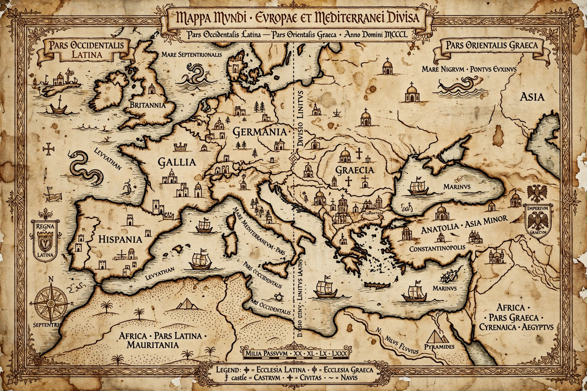

East–West Schism

| Also known as | Great Schism of 1054 |
|---|---|
| Date | 16 July 1054 (mutual excommunications) |
| Parties | Roman Catholic Church; Eastern Orthodox Church |
| Key figures | Pope Leo IX; Patriarch Michael I Cerularius; Cardinal Humbert |
The East–West Schism, also known as the Great Schism, was the break of communion between the Roman Catholic Church and the Eastern Orthodox Church, conventionally dated to 1054. It was the culmination of centuries of theological and political differences between the Greek East and the Latin West of the former Roman Empire.
Causes
Disputes included the source of the Holy Spirit (the Filioque clause added in the West to the Nicene Creed), the authority of the pope of Rome versus the patriarchs of the East, the use of leavened or unleavened bread (azymes) in the Eucharist, clerical celibacy, and diverging languages, liturgies and political loyalties after the division of the Roman Empire and the rise of the Carolingians.
The events of 1054
In 1054 Pope Leo IX sent legates led by Cardinal Humbert of Silva Candida to Constantinople. On 16 July 1054, during the liturgy in Hagia Sophia, Humbert laid a bull of excommunication against Patriarch Michael I Cerularius on the altar. Cerularius responded by anathematising the legates. Leo IX had in fact died in April, casting doubt on the legates' authority, but the breach proved permanent.
Aftermath
Attempts at reunion, notably the councils of Lyon (1274) and Ferrara-Florence (1438–39), failed. The sack of Constantinople by the Fourth Crusade in 1204 deepened the estrangement. In 1965 Pope Paul VI and Ecumenical Patriarch Athenagoras I mutually lifted the 1054 excommunications, and dialogue continues, though full communion has not been restored.